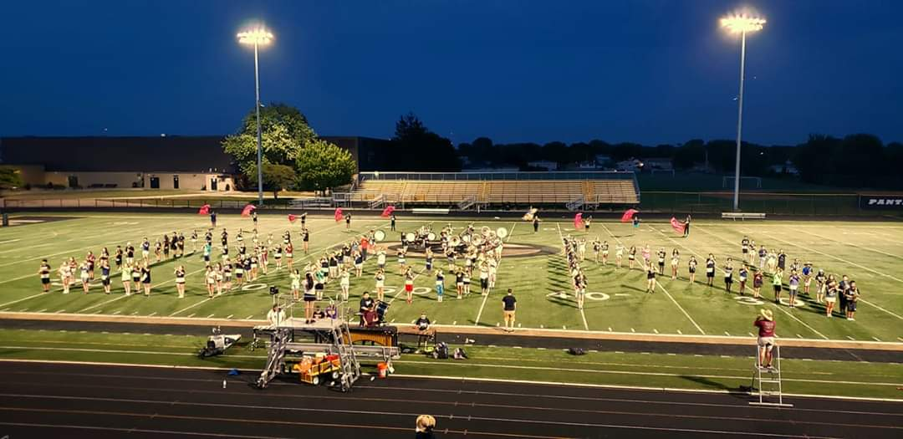
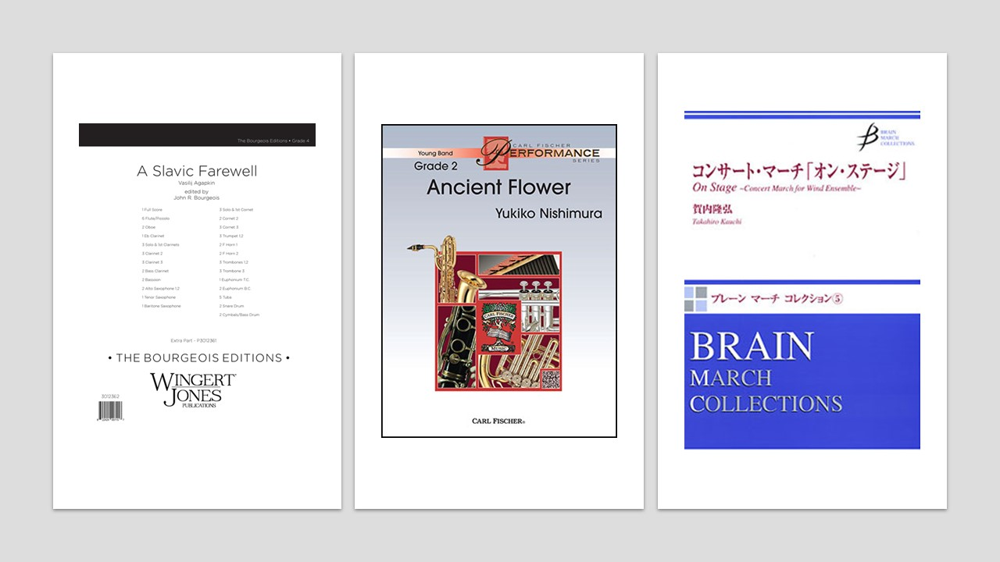
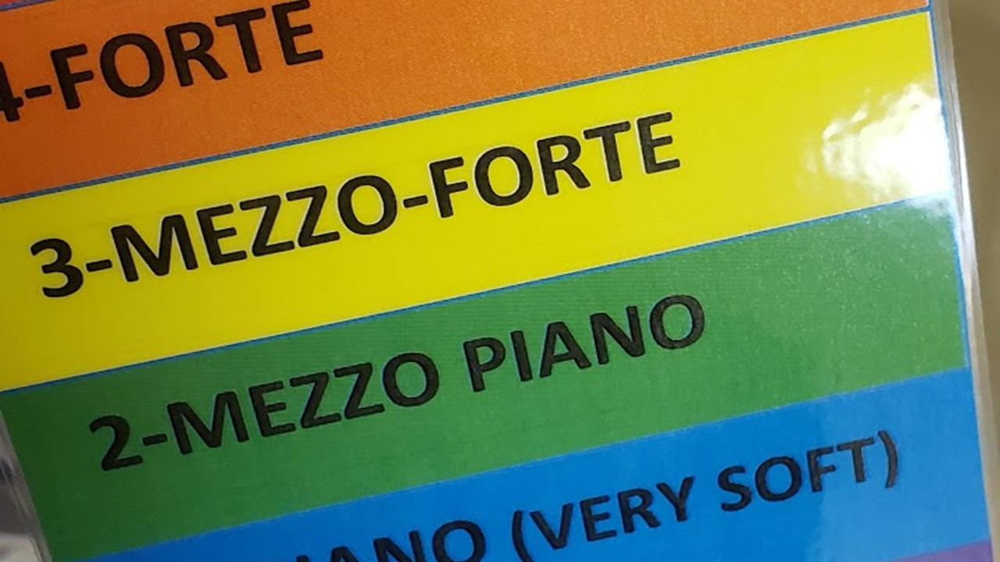

I started my high school placement early- very early. July contained the first few days of a leadership camp and a rookie camp for all the new marchers. During band camp, we worked on learning the pregame music and drill as well as beginning learning the halftime show. During evening rehearsals I assisted in cleaning drill as well as leading sectionals. We learned the rest of the show and were eventually able to perform the full show at two games. I loved reliving the thrill and excitement of high school football. During games, I supervised the band before halftime and even played in the pit.


After marching season was over, right when my high school placement officially started, I worked with the Intermediate Band, composed of primarily freshmen. I worked with them on “Ancient Flower” by Yukiko Nishimura. I also worked with the concert band on “On Stage” by Takahiro Kauchi and with the Symphonic Band on “A Slavic Farewell” by Vasily Ivanovich Agapkin.One of the goals of the director I worked with was to program music written by composers that represented the students. We aimed for an even gender split and to accurately represent the Latinx, Asian, and Black populations of the school.
In the Intermediate Band, I got to work closely with two individuals with special needs. I assisted both with note reading and one with volume control. When we could not find a good way to communicate what we wanted with volume control, we turned to their case manager for help. The case manager came back to us with a color-coordinated chart for dynamics that matched one they were familiar with for voice control. It helped us effectively communicate with the student during rehearsal.
